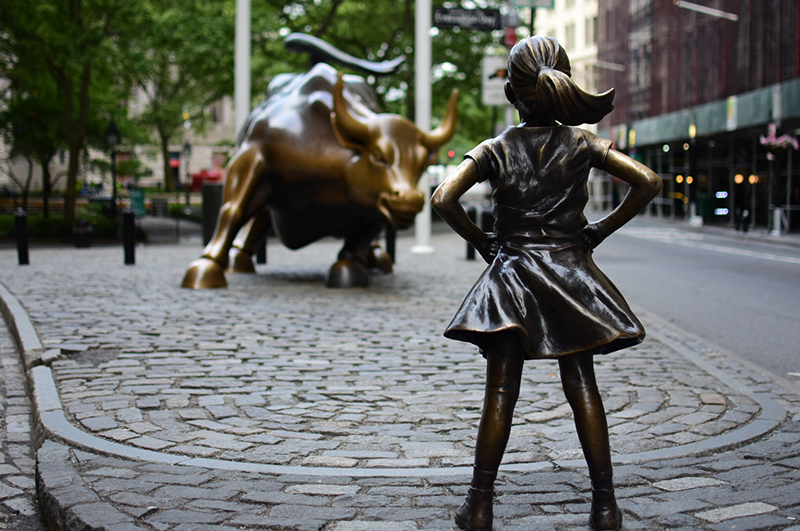

SF

NYC
Andrew L. Wang a journalist and photographer based in Los Angeles.
Andrew explores his love of people, communities and nature through photography. He started making photos with an old Pentax 35mm when he was a kid, switched to digital sometime in the early 2000s and got his first iPhone in 2010. These days he primarily does street photography with travel and outdoors work mixed in.
He shoots small events on a freelance basis. For more information, contact him at: